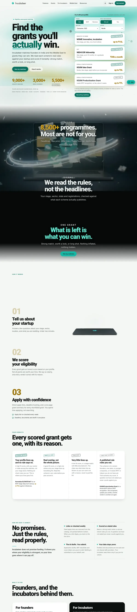

Apply first.
Your stage, sector and state fit what the scheme publishes. These go to the top of your list.
Incubateer, my product
Most grant lists hand founders thousands of links and wish them luck. I built Incubateer to do the opposite: read the rules, check them against your startup, and tell you straight which ones are worth your weekend.

Most grant lists are long. Most grants on them are not for you. Founders find that out three weeks into an application, after the deadline, or never.
Honest eligibility
Your stage, sector and state fit what the scheme publishes. These go to the top of your list.
Close, with one rule to confirm. Incubateer tells you which rule, so you can decide in minutes.
Possible on paper, unlikely in practice. You see it, but you know before you spend the time.
A hard rule rules you out. Better to hear it now than after you've written the pitch.
How it works
Stage, sector and state. A few questions, not a forty-field form.
Each scheme's published eligibility is checked against your profile, and every grant gets its score with the reason behind it.
Verified apply links, deadline tracking and space for your own drafts. It never submits anything on your behalf.
8,500+
grants and programmes indexed2,800+
India grants and schemes5,200+
government programmes130+
Middle East programmes650+
investors and VC firms, counted separatelyWhy I'm building it
I'm a solo, bootstrapped founder in Kerala. I'd rather tell you a grant is a long shot than watch you spend three weeks on it.
Incubateer is India-first, covers the Middle East, and is built for founders everywhere. Every number on this page is a floor, not a brag. When a scheme closes, it comes off the list.
Early access
Incubateer is in early access. If pricing ever changes, you'll hear about it before it happens.